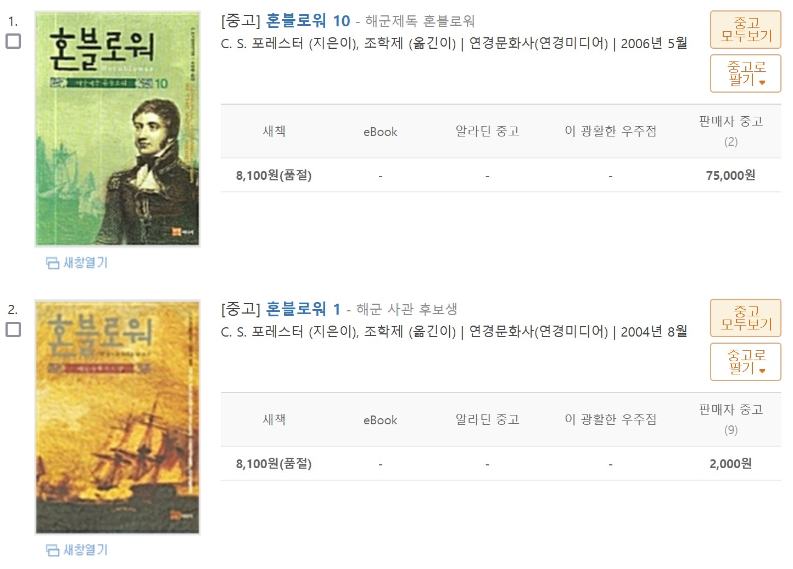
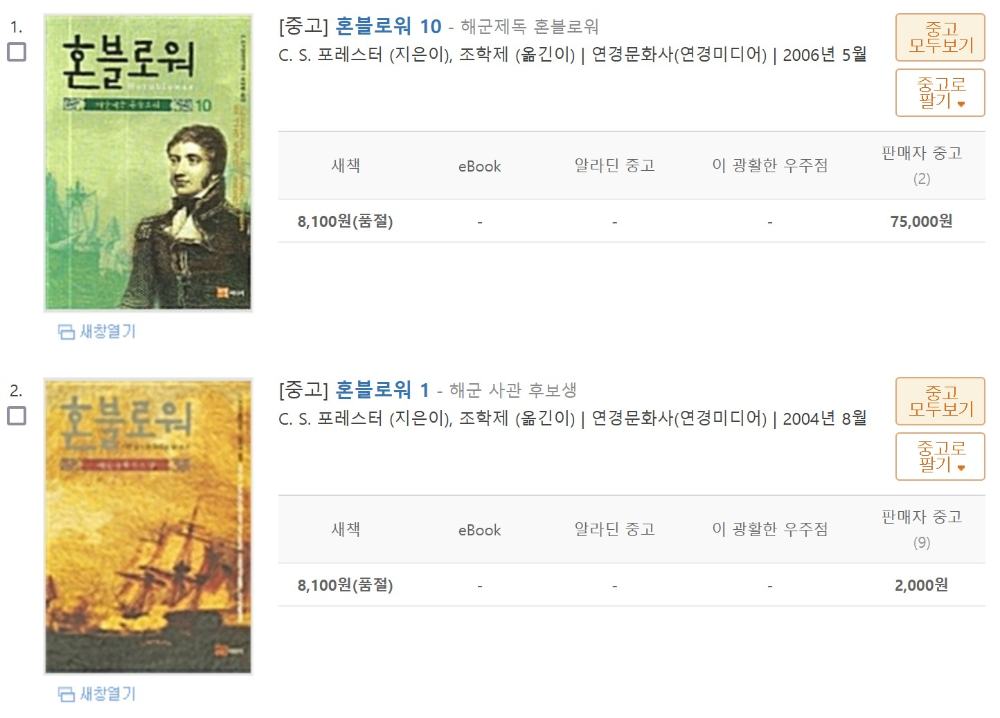

오늘이 제일 싸다.
26/06/2022
좋아하는 술집은 꼭 오래 가지 않는다 란 징크스가 있다. 내가 무엇을 선호하는가를 생각해 보면 어째 당연한 것이, 사람이 적고 조용한 곳을 좋아하니 술집에 손님이 북적거리지 않는다면 오래 유지될 턱이 없다.
실은 이것과 똑 같은 일을 한국에서 SF 소설 애호가로 살면서 겪고 있다. 누구에게 들었는지는 기억나지 않지만 SF 소설은 잘 팔리면 천 부, 안 팔려도 천 부 라는 이야기가 있다. SF 장르에 대한 고정적인 수요는 있지만 절대 독자 층 자체가 얇고 외연 확장이 안 되다 보니, 좋은 책도 한정된 그 안에서만 소비되고 별로인 책도 번역서 자체가 자주 나오지 않다 보니 core 소비층은 그래도 산다는 것이다. 결과적으로 이래나 저래나 천 부가 팔리는 건 좋지만 더 팔리지는 않는다는 속설이다.
실은 이것과 똑 같은 일을 한국에서 SF 소설 애호가로 살면서 겪고 있다. 누구에게 들었는지는 기억나지 않지만 SF 소설은 잘 팔리면 천 부, 안 팔려도 천 부 라는 이야기가 있다. SF 장르에 대한 고정적인 수요는 있지만 절대 독자 층 자체가 얇고 외연 확장이 안 되다 보니, 좋은 책도 한정된 그 안에서만 소비되고 별로인 책도 번역서 자체가 자주 나오지 않다 보니 core 소비층은 그래도 산다는 것이다. 결과적으로 이래나 저래나 천 부가 팔리는 건 좋지만 더 팔리지는 않는다는 속설이다.
이렇다보니 조금 예전에 출판된 책은 대부분 절판 상태다. 다시 찍어 봤자 크게 팔린다는 보장이 없으니 재판 소식도 기대하기 어렵다. 그러다보니 중고 서점을 뒤지는 것이 유일한 방법이다. 그런데 중고 온라인 서점을 둘러보다 보면 약간 웃기는 현상을 쉽게 발견할 수 있다. 예를 들어 10부작인 혼블로워 시리즈 같은 경우 많이 풀린 1부는 정가보다 싼 2,000원짜리도 굴러다니는데 비해 마지막 권인 10권은 75,000 부터 부르는 게 가격이다. 깨끗한 책은 20만원으로 올려놓은 곳도 봤다.

앞쪽이 잘 안 팔리면 굳이 뒤쪽 편을 많이 찍지 않기 때문에 물량 자체가 많지 않아서 생긴 일이기도 하거니와 그것보다

앞쪽이 잘 안 팔리면 굳이 뒤쪽 편을 많이 찍지 않기 때문에 물량 자체가 많지 않아서 생긴 일이기도 하거니와 그것보다
네놈이 9권까지 읽었다면 아무리 비싸더라도 어찌 대망의 결말인 마지막 권을 모르는 체 넘어갈 수 있있는가. 어서 지갑을 열어라.란 이야기가 아닐까 싶다.
그런 의미에서 이건 절판되기 전에 사야 해 라는 일종의 압박감에 '전권 구매 버튼' 이 나도 모르게 눌려질 때가 있고 최근에는 위처 시리즈와 보르코 시건 시리즈가 그렇다.
위처는 딱 게임 시나리오 수준이었고 도서관에서 이미 빌려서 다 읽었지만 그래도 소장용으로 모셔 놓은 '보르코시건 시리즈' 는 볼 때 마다 뿌듯하다.
중간에 두 권을 다시 씨앗을 뿌리는 사람 판본을 사서 책등 그림을 맞춰야 하나 싶다.
위처는 딱 게임 시나리오 수준이었고 도서관에서 이미 빌려서 다 읽었지만 그래도 소장용으로 모셔 놓은 '보르코시건 시리즈' 는 볼 때 마다 뿌듯하다.
중간에 두 권을 다시 씨앗을 뿌리는 사람 판본을 사서 책등 그림을 맞춰야 하나 싶다.